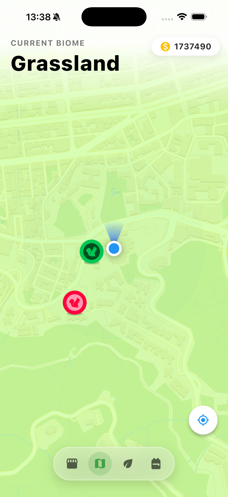
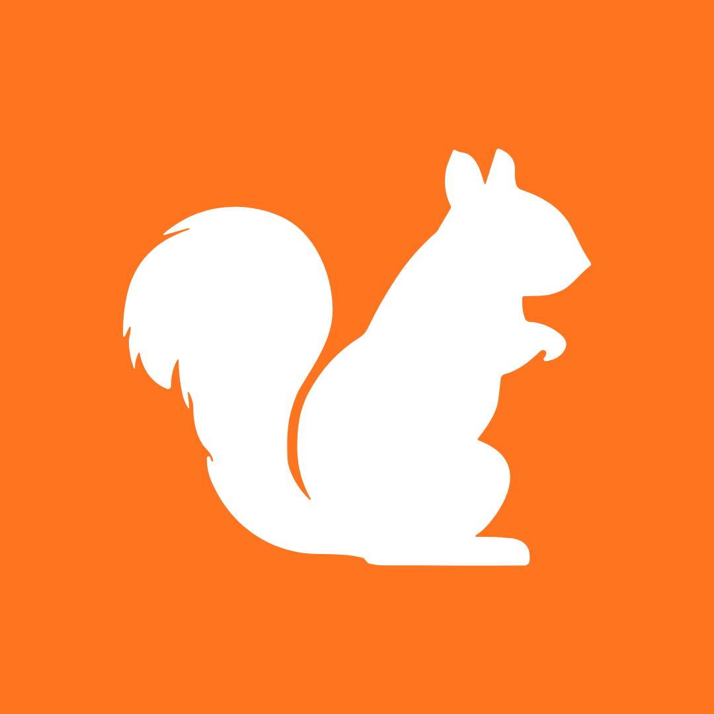

Transform Hong Kong into a virtual natural world, allowing players to immerse themselves and discover various species of squirrels!
Inspired by the exploration mechanics of Pokémon GO, Squirrel Go turns your local campus into a rich, interactive habitat.
Track down squirrel species hidden across the city using real-time GPS.
Every squirrel you discover unlocks fascinating facts about their biology, diet, and role as "nature's gardeners" in our ecosystem.
Use virtual acorns to document squirrels and complete your Field Guide.


Download Squirrel Go today for free and join hundreds of students discovering the wildlife right outside our classrooms.